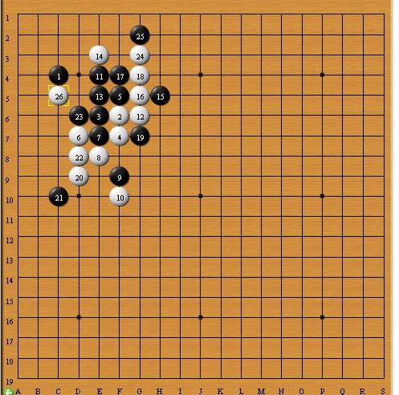

2013年暑假杯家族争霸赛2台选手对局晴空棋评
第3轮：◣神话◥benyaya（假先） VS 【讲五堂】jwt2（黑胜）
http://game.freewzq.com/offlineDisplayGame.html?html=6559351&id=1997
【暑假杯】扑捉时机 一子定乾坤
#1 【暑假杯】扑捉时机 一子定乾坤 作者：蓝天蓝 发表时间：2014-6-5 13:03:47
扑捉时机 一子定乾坤
时间：2013年8月11日 地点：新慢棋网
小注；由于慢棋网的棋盘与棋评时的棋盘在位置上有颠倒 。 本棋评在棋子坐标上遵循比赛坐标 ， 所以在整盘布局上与比赛棋盘有出入。请见谅。
棋局总谱

1：【开局不慎】黑棋开局落后。
实战图如下：
◣神话◥benyaya先手下在C4. jwt2提出交换。2手所起的作用应该是限制住黑棋1手，防止它向外围扩散。（所以这个2手棋，不能离黑棋1手太远，如果离得太远的话.黑1 可以很轻松地在其附近做棋，离得太近 的话 ，倒是可以限制住黑棋1手，但是黑棋3手 可以很轻松的限制住白棋2手。如果这样 白棋想通过白棋2手做棋将会十分困难）。所以白棋选择了一个不远也不近的F6.这个点既不会因为离一手太近而不牵制住，又不会因为离得太远而让黑棋舒服的做棋。同时白棋还有充足的空间来做棋。（见参考图一）
参考图一如下：
如图所示：白棋 2手 可以向四周扩散。黑棋3手选择贴着白棋2手下，主要也是为了 尽可能的限制白棋2手的作用。个人认为黑棋3手也可以这样（见参考图二）
参考图二如下：
3手挡在2手的头顶上对2手起一个压制的作用。白棋4手挡住黑棋的活三点F7（对黑棋而言 ，由于第1手在边角，所以黑棋要想赢棋必须要冲出这个小的区域 向中间的开阔地带进军。所以黑棋下一步肯定会在F7而不是E6活三。4手提前站住这个点既可以堵住黑棋向外冲又可以形成活二。可谓一举两得。
2：【白棋争先】白棋想法争先手。
实战图如下：
黑棋5手挡在F5,黑棋首先想的是要防住白棋的这个活二，同时看看有没有机会同黑棋1手联合做棋（因为对于一手交换来说，黑棋1手下边角 ， 如果白棋2手不贴身防守黑1的话 ，就相当于这盘棋是白棋先手了。黑1也就失去了任何价值 .黑1要想体现价值必须要和其他的字子，形成子力配合。）黑5手在防住白棋的活二， 伺机拯救黑1的同时，与黑3形成了一个活二。白棋6手下的很谨慎（为了防止 黑3和黑5这个活二下来捣乱 。 干脆直接封住了这个活二。）（见参考图三）。
参考图三如下：
让黑棋的这个活二冲下来的话 ，就是这个样子。
黑棋7挡中间。（因为随着白6的落下，白棋4和6不单单形成了一个跳活二，更可怕的是一旦白棋下一手在E7 将会导致十分可怕的连锁反应。（见参考图四）
参考图四如下：
白棋8手挡在E8.（这手棋有几个作用：首先挡住黑3和7的向下活三 ，最重要的是它和白4和6 形成双活二。）
3：【控制外围】黑棋防守控制外围。
实战图如下：

黑棋9手挡在F9.破掉白棋的一个活二。这样的话 (1)如果9手正确，白棋剩下一个活二也就掀不起大浪来了(2)如果9手错误，白棋就连攻胜了（见参考图五）
参考图五（1）如下：
实战图如下：
参考图五（2）如下:
2种不同的防法带来不同的结果。很显然黑棋9手应该在F9.
白棋10手下在E5（这手棋是防守的一手棋。主要防止黑棋5,3,7手与1手相互进行子力连接。）这时候白棋最担心黑棋落在E4（见参考图六）
参考图六如下;

虽然黑棋没有连攻胜，但是黑棋这样的进攻还是白棋不愿意看到的。11手黑棋G6挡一下白棋的活二。此时白棋还有一个活二，令人费解的是，12手白棋竟然没有冲掉这个活二（见参考图七）。
参考图七如下：
从图上来看，即便冲掉这个活二，如果黑棋防守得当的话，白棋也是胜不了的。黑棋13手挡住这个活二，14手挡上面。（见参考图八）
参考图八如下：
从图上看，即便白棋不挡黑棋的这个活二，黑棋临时也成不了气候。
4：【争夺外势】双方争夺外势。
实战图如下：
15手做一手棋，（这手棋既可以与7手 ，与9手 活三，又可以冲四。16手挡住15手与7手间的子力连接。这样黑棋就只剩下一个活三和一个冲四。（见参考图八）
参考图八如下：
从图上来看，剩下的这个活三和冲四的作用极其有限，稍不留意，白棋便可以外势占优。黑棋17手活三。黑棋眼看在这样下去，早晚会被白棋围困，所以17手跳活三，希望冲出白棋的包围圈。19手把黑棋的意图暴露无疑（黑棋就是想往下冲在下面开阔地带做棋。这手棋相当有威胁（见参考图九）
参考图九如下：
黑棋连攻胜了。
白棋20手漂亮。白棋20顺势下移这样白棋就形成了一个跳冲四。同时还能大大降低黑棋13 17 19手配合做棋从而对白棋造成的巨大威胁。
5【先手反击】黑棋先手开始反击。
实战图如下：
21手黑棋向上活三(前面已经说过，黑棋剩下的一个活三和一个冲四 已经起不了作用了)但是黑棋还是努力的想往外冲。白棋22挡上面防止黑棋冲出去。黑棋23手转而寻求往下冲（借助13 17 19 这个冲四来做棋）。（见参考图十）。
参考图十如下：
同时这个23手还是很好的一手防守棋（见参考图十一）。
参考图十一：
如果黑棋23手不挡住白棋的冲四的话 ， 白棋会借助这条斜线冲四来扩展地盘。（尽管黑棋在G8 顺势冲四，但是这个冲四所起作用有限）。
防止白棋连续冲四。白棋24手紧贴23手 （目的有二：一来可以防止黑棋13 17 19 手向下冲四，与黑棋23手形成连攻。二来贴住23手防止23手向四周活二。）黑棋25手G11.这手棋主要是做棋。（见参考图十二）
参考图十二如下：
25手做棋,做连攻胜。
白棋识破黑棋的这个想法，在D8先活三。黑棋27手冲四（见参考图十三）
参考图十三如下：
黑棋27手挡左边比右边好（因为如果黑棋挡右边冲四白棋等于说瞬间多了一个活二，同时如果黑棋接下来想在F12活三的话，白棋正好可以反三。
6【锁定胜局】黑棋连攻。
实战图如下：
棋下到28手，黑棋已经出现了连攻胜。J8,F10,J10 白棋见无力回天，投子认输。（见参考图十四）。
参考图十四如下：